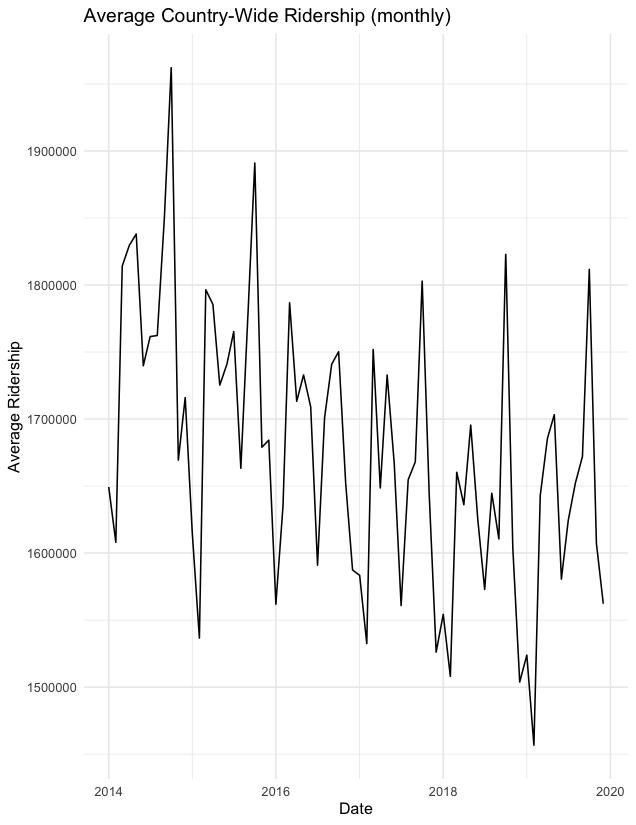

Public-Transit/Rideshare Partnerships: Issues in Measurement
One of the difficulties in determining the actual treatment effect of public transit/rideshare partnerships is that there is considerable exogeniety and variation in public transit ridership. Variables like seasonality, gas prices, fares, construction, etc. can all impact ridership.
 The staggered timing and slight variation in partnership strategies (the treatment effect in this case) also forced me to use some more complex regression methods. These come with a need to make more stringent assumptions regarding pre-trends. I also introduced urbanized area (UZA) and month/year fixed effects to try and control for exogenous variables.
A simpler design and On the Mode of Communication of Cholera
The standard difference-in-difference design comes from